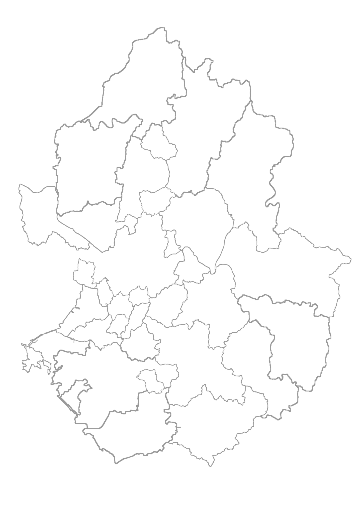

지역 선택

지역 주요 쟁점
지역을 선택해주세요
지도에서 지역을 선택하면 주요 쟁점이 표시됩니다.
REFORM PARTY · NOMINATION
공천장
제22대 국회의원 선거 후보자 추천
지역 미선택
개혁신당 공천관리 시스템
후보자 평가 및 추천 기록
후보자 평가 및 추천 기록
공천
후보자 공천 시 당대표 특성, 지역 주요 쟁점, 후보자 정책 방향을 기준으로 평가합니다.
공천 진행 상황
0 / 10명
REFORM PARTY · CANDIDATES
공천 완료 후보 명단
2028년 총선 지역구 후보자 공천 현황
| 순번 | 지역 | 후보자 | 주요 정책 방향 | 초기 지지율 |
|---|---|---|---|---|
| 공천 완료된 후보자가 없습니다. | ||||
※ 초기 지지율은 시뮬레이터 내부 평가를 위한 가상 수치입니다.